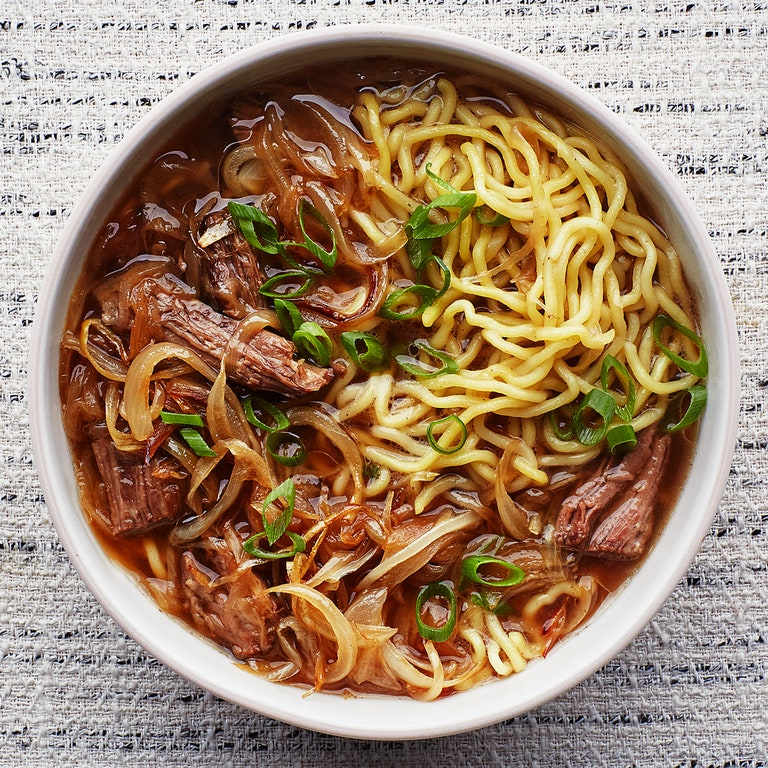

French Onion Beef Noodle Soup
INGREDIENTS
- 2 Tbsp. vegetable oil
- 3 lb. English-style bone-in beef short ribs, cut into 2" segments
- Kosher salt
- 6 scallions, white and dark green parts separated
- 8 garlic cloves
- 1 4" piece ginger, scrubbed, thinly sliced
- 6 star anise pods
- 2 3" cinnamon sticks
- 8 whole cloves
- 2 tsp. black peppercorns
- 2 tsp. coriander seeds
- 1 cup dry white wine
- ½ cup (or more) low-sodium soy sauce
- 3 Tbsp. unsalted butter
- 5 lb. onions (about 10 medium), thinly sliced
- 2 Tbsp. (or more) unseasoned rice vinegar
- 30 oz. fresh or 18 oz. dried ramen noodles
Preparation Time
Time needed: 45 mins
Instructions
- Heat oil in a large Dutch oven or other heavy pot over medium-high. Season short ribs with salt and, working
in batches,
cook, turning occasionally, until well browned on all sides, 12–14 minutes. Transfer to a platter as you go.
Carefully
pour off fat left behind in pot until there is just enough to cover bottom of pot; discard.
- Return pot to medium heat. Cook whole white scallion parts, garlic, and ginger, stirring occasionally, until
they are
starting to brown, about 4 minutes. Add star anise, cinnamon, cloves, peppercorns, and coriander seeds and
cook,
stirring often, until fragrant and oil is sizzling, about 1 minute. Add wine, scraping up any browned bits
from bottom
of pot with a wooden spoon. Simmer until almost completely evaporated, about 3 minutes. Return beef to pot
and add soy
sauce and 12 cups water. Bring to a boil, then reduce heat and cover partially with a lid. Simmer until meat
is not
quite falling off the bone, about 1½ hours.
- Meanwhile, heat butter in another large pot or Dutch oven over medium-high until foaming subsides. Add
onions, season
with salt, and cook, stirring often, until they begin to take on some color, about 15 minutes. (If they
don’t fit in
your pot, add as much as you can, cover, and steam 5 minutes. Stir in remaining onions and continue
cooking.) Reduce
heat to medium-low and cook, stirring occasionally, until onions are deep golden and softened but not mushy,
30–45
minutes.
- Using tongs, remove beef from broth and let cool until you can handle. Tear meat into bite-size pieces,
discarding any
bone and excess fat as you go. Strain broth through a fine-mesh sieve into a large bowl; discard solids.
-
Add meat and broth to pot with onions. Bring to a boil, reduce heat to low, and simmer until liquid is
reduced a bit and
flavors have melded, about 30 minutes. Add vinegar; taste and add more vinegar and/or soy sauce if needed.
-
Thinly slice remaining scallion greens. Cook noodles according to package directions. Divide among bowls.
Ladle soup
over noodles, making sure each bowl gets some meat and plenty of onions. Top with scallion greens and serve.

For other recipes that contains Onion~
-
recipe 1
-
recipe 2
Original Recipe can be
found here.
Go back to main page